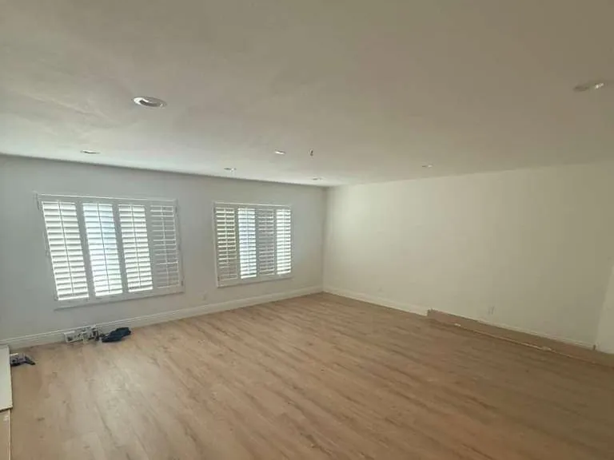
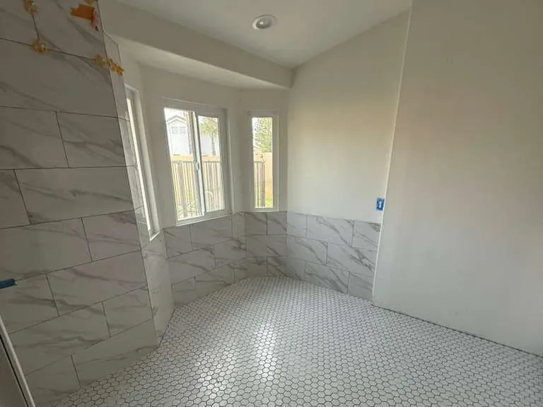
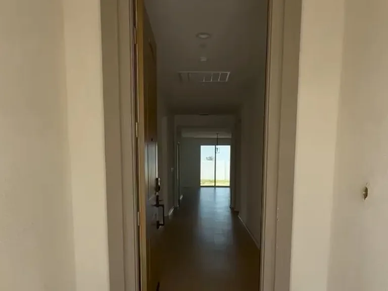
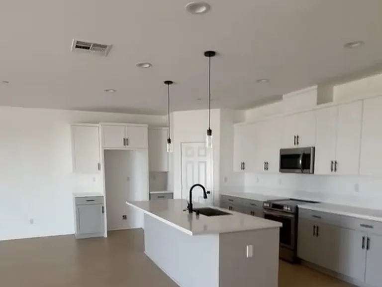
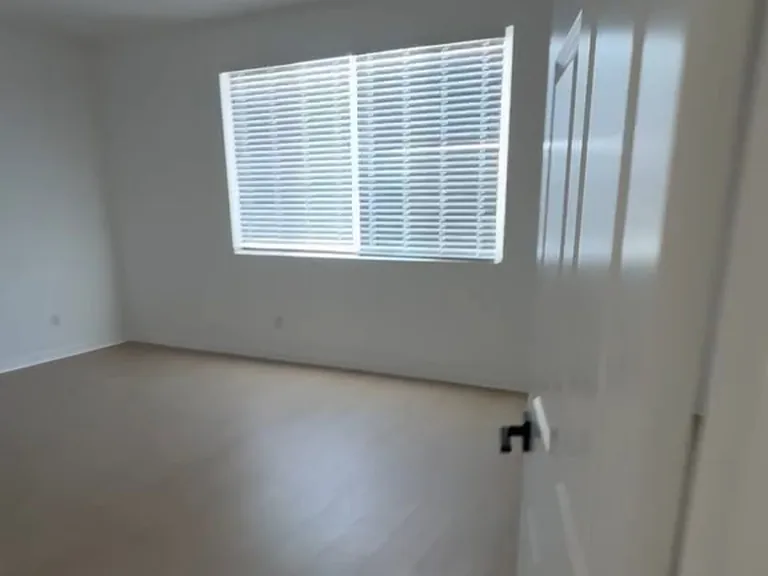
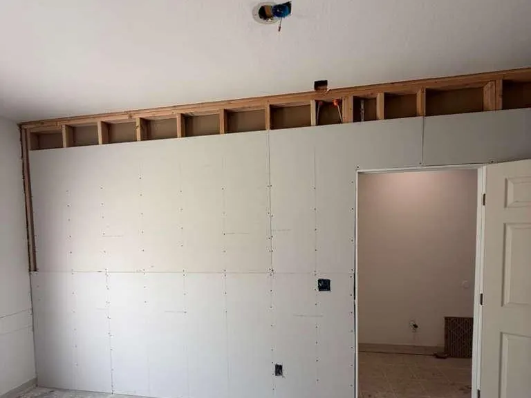
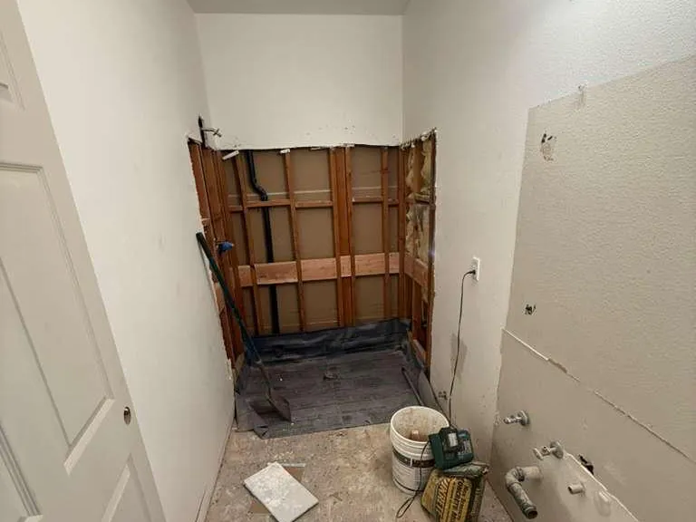

CALMORA 1 — Корона
675 Avenida Terrazo, Corona, CA 92882
Дата открытия будет объявлена
Calmora Health Group создаёт сеть шестиместных домов медицинского ухода (Congregate Living Health Facility, CLHF) в Южной Калифорнии — круглосуточный квалифицированный сестринский уход, поддержка ИВЛ и сложный уход в домашней обстановке.
Три дома в разработке

01 Наша миссия
Congregate Living Health Facility (CLHF) — это лицензированное медицинское учреждение жилого типа для пациентов, чьи потребности слишком сложны для обычного проживания с уходом, но которые, как правило, уже не нуждаются в больнице интенсивного лечения. Уход здесь более интенсивный, чем в типичном учреждении сестринского ухода: круглосуточный квалифицированный сестринский уход, поддержка и ведение ИВЛ, уход за трахеостомой, сложные раны, внутривенная терапия — в доме на шесть мест, где каждого пациента знают по имени, по истории болезни и по тому, что для него важно.
CLHF — это не пансионат с уходом, не дом престарелых, не хоспис и не частный дом с сиделками. Это регулируемое медицинское учреждение, где пациенты со сложными состояниями получают постоянную сестринскую и клиническую поддержку в домашней обстановке.
Наша миссия: обеспечивать сострадательный, клинически ответственный и индивидуальный уход за людьми со сложными медицинскими состояниями в безопасной, достойной и домашней среде — сочетая дисциплину лицензированного медицинского учреждения с личным вниманием, которое возможно в доме на шесть мест.
02 Почему Calmora
Каждый объект переоборудуется и оснащается именно под этот уровень ухода: естественный свет, тихие комнаты, сад за настоящим окном. Среда влияет на восстановление — поэтому сам дом мы считаем частью плана лечения.
Структурированный клинический разбор каждого направления, честные ответы о наших возможностях и наличии мест, согласованное планирование перевода. Выписка должна быть спокойной передачей пациента, а не прыжком в неизвестность.
Свободное посещение, понятные объяснения без медицинского жаргона и команда, которая обосновывает каждое решение. Восстановление идёт лучше, когда рядом близкие.
03 В разработке
Каждый дом CALMORA готовится как лицензированный дом на шесть мест — жилой по масштабу и ощущению, с клинической инфраструктурой, которой требует сложный медицинский уход.
675 Avenida Terrazo, Corona, CA 92882
Дата открытия будет объявлена

13531 Darwin Drive, Moreno Valley, CA 92555
Дата открытия будет объявлена

24819 Skyland Drive, Moreno Valley, CA 92557
Дата открытия будет объявлена
04 Клинические программы
Поддержка и ведение ИВЛ, уход за трахеостомой и санация дыхательных путей, обеспечение проходимости дыхательных путей, кислородная терапия и респираторный мониторинг — совместно с респираторными терапевтами, пульмонологами и поставщиками оборудования.
Круглосуточный квалифицированный сестринский уход: оценка состояния и наблюдение, введение и контроль лекарств, уход за сложными ранами, катетерами и стомами; внутривенная терапия и уход за катетерами — по назначению врача и в пределах возможностей учреждения.
Физическая, эрготерапия и логопедия — предоставляются или координируются в соответствии с индивидуальным планом ухода. Прогресс измеряется в том, что действительно важно: первый шаг, первое слово, приём пищи за столом.
Энтеральное питание и диетологическая поддержка, социальная работа, досуговые программы, обучение родственников и семейные консилиумы — а также планирование выписки и перехода с первого дня пребывания.
Предполагаемый профиль пациентов. Каждый пациент проходит индивидуальный клинический разбор до поступления — возможность приёма зависит от лицензии, назначений врача, укомплектованности персоналом, оборудования и наличия мест.
05 Наша философия
Руководство CALMORA имеет опыт в управлении медицинскими организациями, создании медицинских учреждений, координации лицензирования, постгоспитальном и долгосрочном уходе, хосписной и паллиативной помощи, а также в работе со сложными ранами. Стандарт прост: каждый протокол клинически обоснован, в каждой комнате дневной свет, каждую семью встречает человек, который знает её по имени.
«Мы создаём CALMORA, потому что пациенты со сложными медицинскими состояниями заслуживают большего, чем просто место для пребывания после больницы. Наша цель — небольшие дома, где квалифицированный уход, достоинство, участие семьи, безопасность и личное внимание заложены в план ухода за каждым пациентом».
— Don Arthur Estuita · основатель, развитие и операционное управление

06 Путь к открытию
Указанные сроки — это оценки руководства. Они могут измениться в зависимости от хода строительства, получения разрешений, проверок, работ по инженерным сетям, лицензирования, найма персонала, закупки оборудования, включения в реестры плательщиков, финансирования и других регуляторных или операционных условий.
07 Поступление
Каждое направление проходит один и тот же путь — чтобы больницы, семьи и страховые всегда понимали, на каком этапе находится решение.
С Calmora связывается больница, кейс-менеджер, врач, страховая, член семьи или уполномоченный представитель.
Медицинские документы передаются по защищённому каналу. Квалифицированный специалист оценивает состояние, потребности в сестринском и респираторном уходе, лекарства, питание, оборудование, реабилитацию и риски безопасности.
Мы подтверждаем, что у дома есть лицензия, свободное место, персонал, компетенции и оборудование, чтобы безопасно обеспечить уход.
Проверяются право на покрытие, авторизация, объём страховых выплат и требования плательщика.
После согласия мы координируем назначения врача, аптеку, респираторное и медицинское оборудование, питание, транспорт и план выписки.
Сестринская и междисциплинарная команда проводит необходимые обследования и начинает индивидуальный план ухода.
Работа с любым плательщиком зависит от регистрации, заключения договора, авторизации и условий покрытия.
08 Больницам и кейс-менеджерам
Мы принимаем предварительные запросы на направление до открытия. Мы стремимся подтвердить получение запроса в течение одного рабочего дня; срок полного клинического разбора зависит от наличия и полноты медицинских документов, сложности случая, наличия мест, персонала, требований к оборудованию и авторизации плательщика.
Помощь с поступлением, разбор страховых вопросов, свободное посещение и честные ответы на каждом шаге. До открытия мы поможем понять, подходит ли уровень ухода CLHF вашей семье — без обязательств и без медицинского жаргона.
Поговорить с намиМы формируем команды дипломированных медсестёр (RN), лицензированных медсестёр (LVN), респираторных терапевтов, специалистов по реабилитации (PT, OT, SLP) и вспомогательного персонала для всех трёх домов. Дома на шесть мест, тесная командная работа и руководство, которое слышит.
Оставить заявку09 Как идёт работа
Каждый дом перестраивается под уход на шесть мест: расширенные проёмы, заново собранные санузлы, обновлённые инженерные сети. Ремонт в Короне и Дарвине завершён — дома ждут лицензирования; Скайлэнд в активной работе. Съёмка: август 2026.









Переоборудование, получение разрешений и подготовка к лицензированию идут в доме на Avenida Terrazo — первом в очереди CALMORA.
С покупкой дома на Skyland Drive первая очередь CALMORA из трёх домов в Короне и Морено-Вэлли укомплектована.
Дом на Avenida Terrazo становится первым в сети CALMORA — он готовится как дом медицинского ухода (CLHF) на шесть мест.